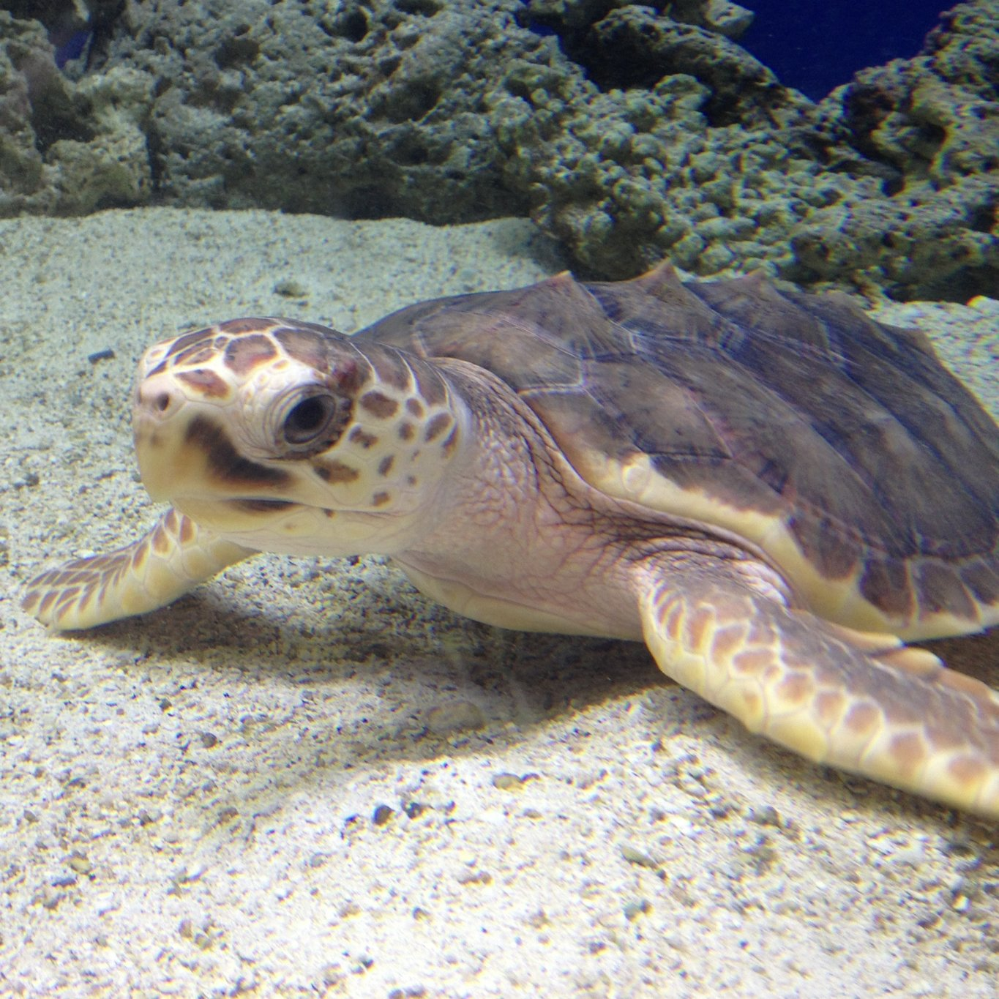
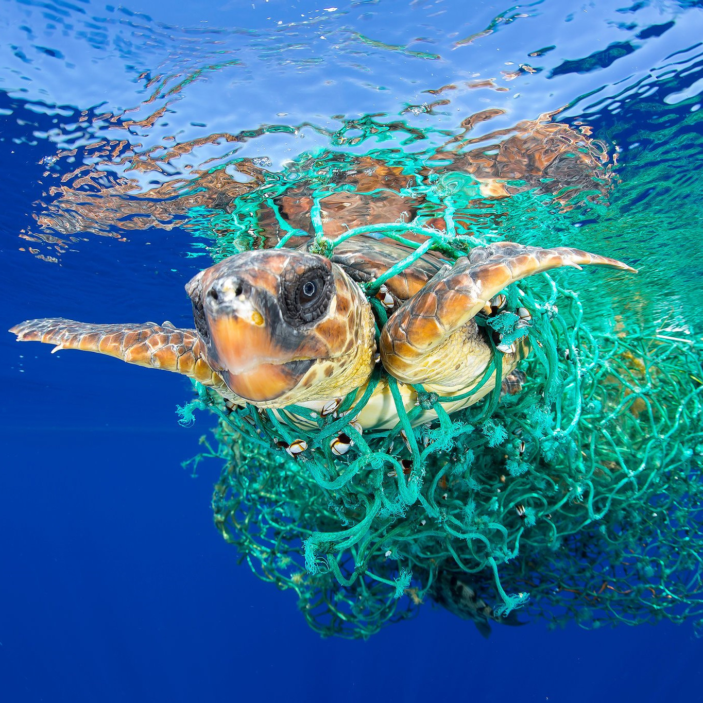

Chodíte rádi do fast foodů, aby jste se potěšili? Kupujete si ke svému menu pití v kelímcích?
Příště zvažte, co si kupujete. Jednorázové plasty zahlcují náš svět takovým způsobem, že se tvoří plastové ostrovy.

Stejně jako my si zvířata denně hledají potravu. V oceánu plave spousta kořisti. Ale zvíře nerozpozná rozdíl mezi plastem a jídlem.
Buďto se do toho zamotá, někde se mu to zabodne, nebo mu to zahltí žaludek a následně umírají.
Je možnost, že za několik let další generace ani nepoznají, co želva je. Bude to pouze vzpomínka v historii.

Zastavte svou spotřebu plastů.